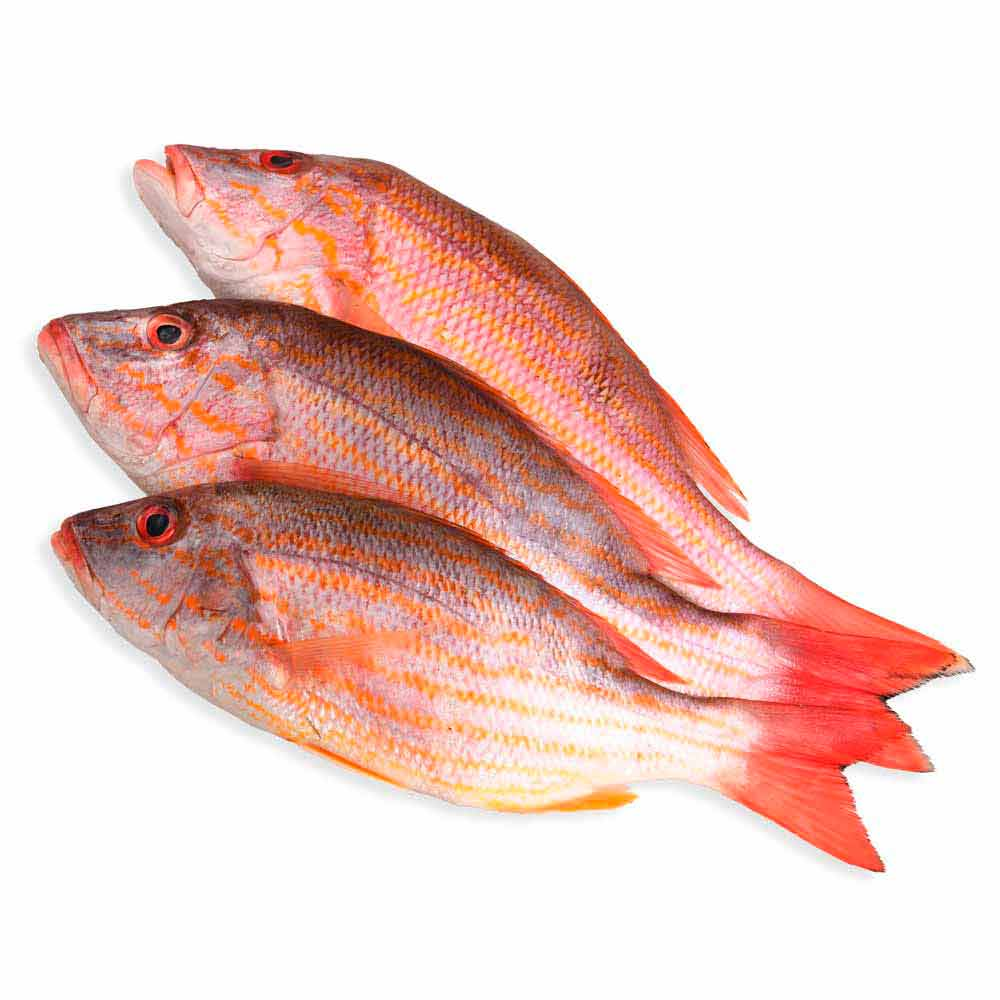

Pargo
Lutjanus spp. El Pargo es un pescado de carne blanca y firme, conocido por su sabor delicado y versatilidad en la cocina.
- Pargo a la parrilla
- Pargo al horno
- Pargo a la veracruzana
- Pargo en ceviche
Lutjanus spp. El Pargo es un pescado de carne blanca y firme, conocido por su sabor delicado y versatilidad en la cocina.